Lo Mejor
SAW
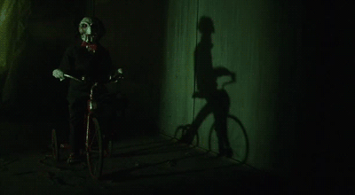
HOSTEL
ANABELLE
El Abogado Del Diablo
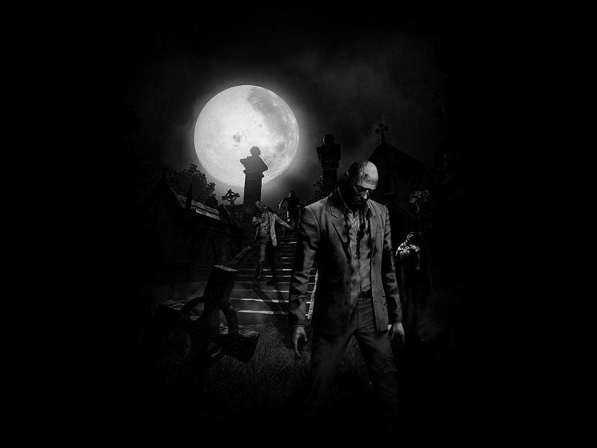
Masacre en Texas
Libranos del Mal
REC
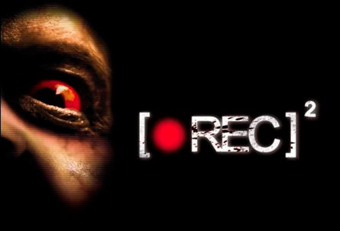
El Conjuro
Mama
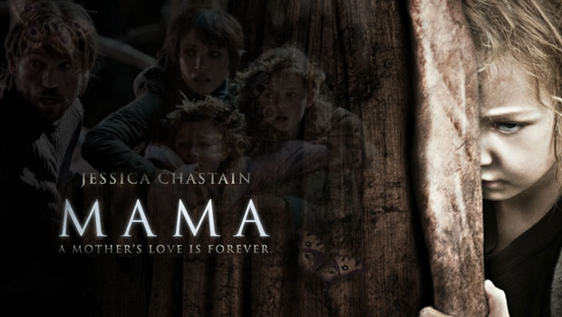
Acividad Paranormal
.jpg)
El Exorsismo de Emily Rose
El sacerdote Richard Moore"Tom Wilkinson"Tom Wilkinson es acusado de homicidio por negligencia por la muerte de la joven Emily Rose "Jennifer Carpenter Jennifer Carpenter. Esta católica devota empezó a tener visiones aterradoras tras asistir a la universidad y decide contactar con el cura, pues está convencida de que necesita un exorcismo. Ahora, la abogada agnóstica Erin Bruner "Laura Linney"Laura Linney decide arriesgar su reputación ayudando al padre Moore. Emily estaba poseída por (demonio, o bien, nombre de aquel que poseyó Lucifer Caín Judas Iscariote Judas Nerón Legion.
Anabelle
El film empieza con la misma secuencia vista en The Conjuring El conjuro donde tres jóvenes eran entrevistados por Ed y Lorraine Warren sobre sus experiencias con una muñeca a la que habían llamado Annabelle(muñeca)Annabelle> y que supuestamente estaba poseída.
Tras la presentación, el argumento retrocede a 1970. John y Mia Form Ward Horton (aún no redactado) esperan a su primera hija. Mia es una amante de las muñecas, por lo que su marido le regala la muñeca que siempre ha estado buscando. Una noche mientras duermen, Mia escucha ruidos procedentes de la casa de sus vecinos: los Higgins Kerry O'MalleBrian Howe. Tras ver lo que sucede, John descubre que han sido asesinados, suerte que están a punto de correr cuando dos jóvenes (un hombre y una mujer) intentan matarlos hasta que la policía llega a su casa y acaba con el agresor no sin antes apuñalar a Mia, mientras la otra consigue suicidarse mientras sostiene a la muñeca en brazos. Las noticias confirman que uno de los asaltantes era Annabelle Higgins (Tree O'Toole), la hija desaparecida de sus vecinos y que al parecer se había unido a una comunidad satánica.
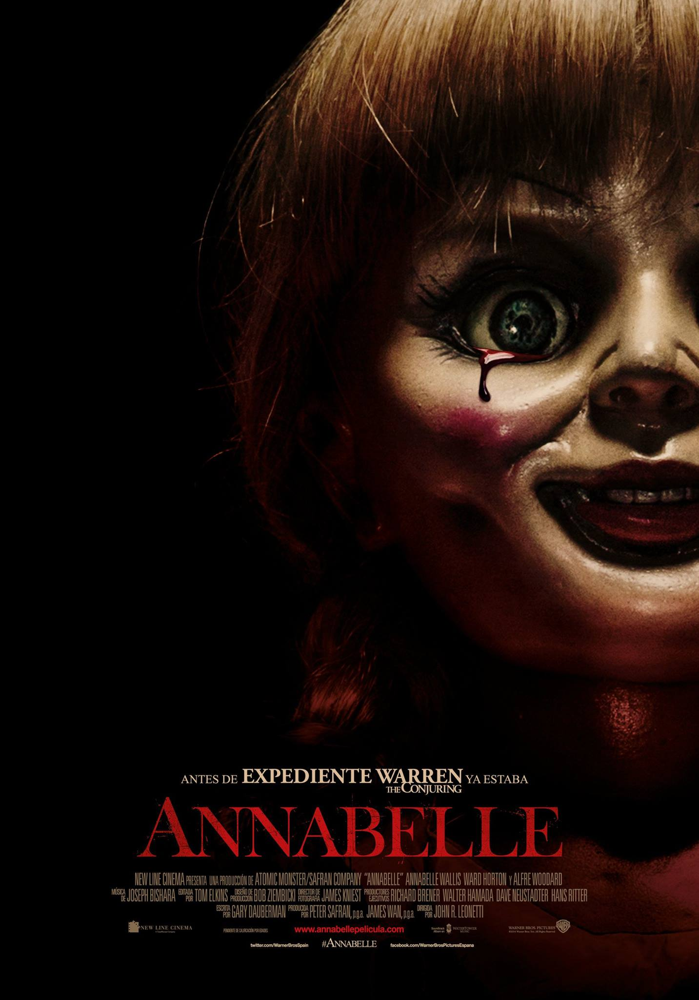
Resucitados
En grupo de estudiantes de medicina descubren un modo de regresar a la vida a pacientes muertos.
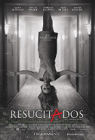
Libranos del Mal
La película está basada en los hechos de la vida real de redactad Ralph Sarchie, un policía de Nueva YorkNueva York que conoce a un Sacerdote sacerdote católico, cuando él sacerdote le convence de concentrarse en un caso, a pesar de haber perdido su fé, este se relaciona diabólicamente con los sucesos. Juntos, trabajan para resolver el caso y para lograrlo tendrán que luchar contra fuerzas paranormales que trabajan en contra de ellos. Los dos deberan exorcizar a un demonio en un hombre que ahora es el único sobreviviente de un pequeño grupo de personas que se ocultaba en una cueva en Irak.
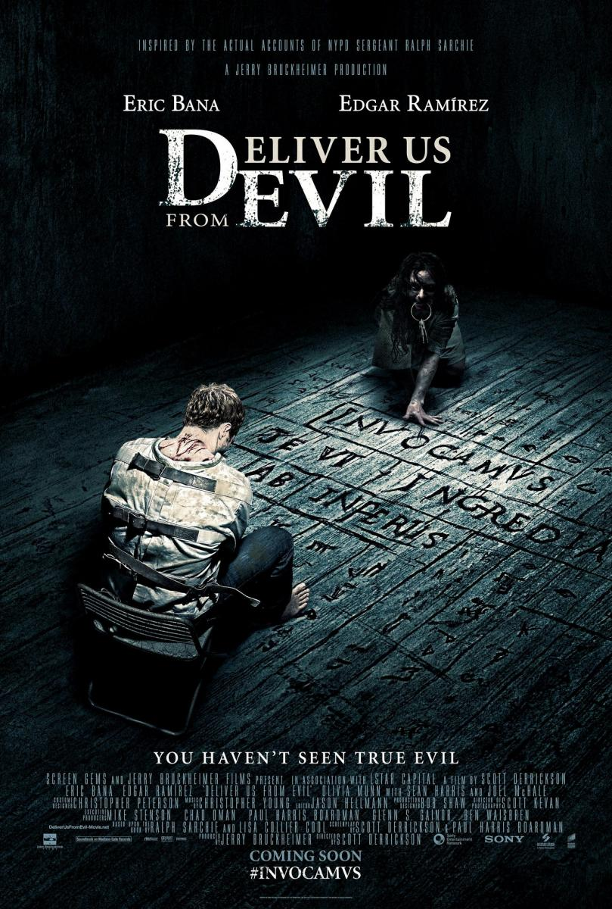
Ouija
Luego de que una amiga del grupo fallece en un supuesto 'suicidio' y que su mejor amiga Lane esté completamente segura de que su amiga no se habría quitado la vida, un grupo de amigos cercanos de adolescentes debe enfrentarse a sus miedos más fuertes y demoníacos cuando despiertan los poderes oscuros de un antiguo espíritu, tratando de ponerse en contacto con su amiga muerta. Pronto se dan cuenta de que la Ouija no es sólo un juego; es la vida real.
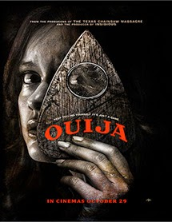
Anabelle
Fecha de estreno: 2 de julio de 2014 Suecia,Canadá, ...
Director: Scott Derrickson
Duración: 1h 58m
Música compuesta por: Christopher Young
Géneros: Cine de terror, Cine de acción, Suspenso, Novela policíaca
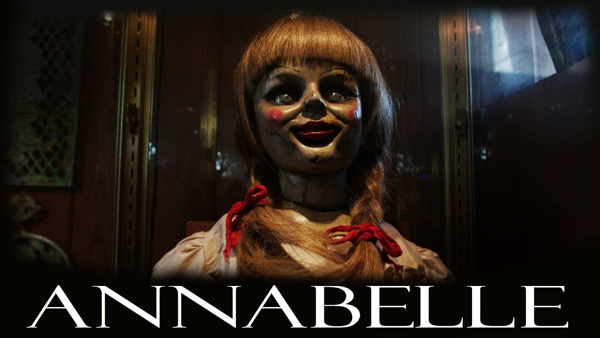
El Exorsismo de Emily Rose
Fecha de estreno: 9 de septiembre de 2005 Estados Unidos
Director: Scott Derrickson
Duración: 2h 2m
Música compuesta por: Christopher Young
Premios: MTV Movie Award a Mejor Actuación Asustada
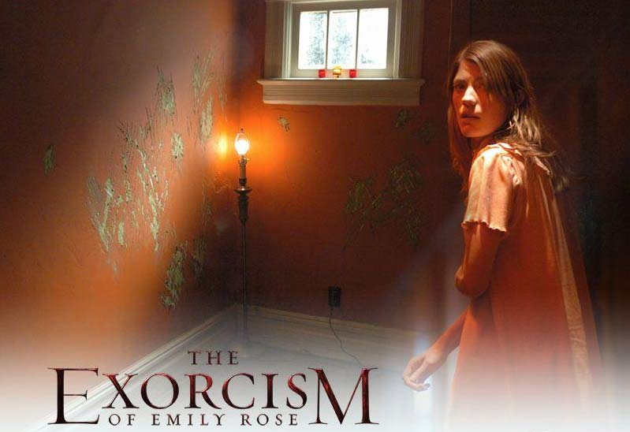
Ouija
Fecha de estreno: 24 de octubre de 2014 Estados Unidos
Directores: Stiles White, Joseph McGinty Nichol
Duración:1h 30m
Géneros: Cine de terror, Cine de acción, Suspenso, Cine de aventuras
Guión: Adam Horowitz, Simon Kinberg, Edward Kitsis
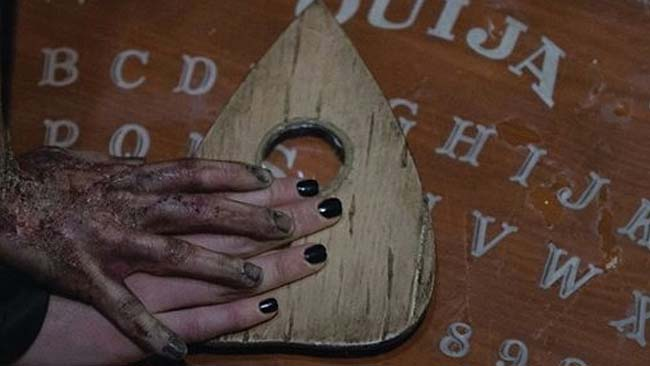
Libranos del Mal
Fecha de estreno: 2 de julio de 2014 Suecia,Canadá, ...
Director: Scott Derrickson
Duración: 1h 58m
Música compuesta por: Christopher Young
Géneros: Cine de terror, Cine de acción, Suspenso, Novela policíaca
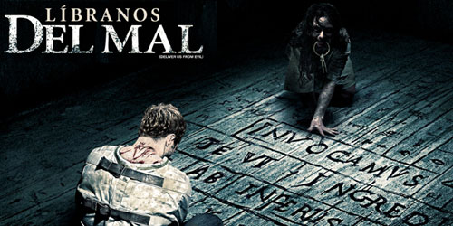
SAW
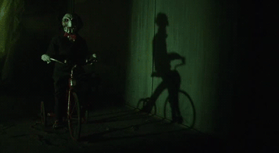
HOSTEL
ANABELLE
El Abogado Del Diablo
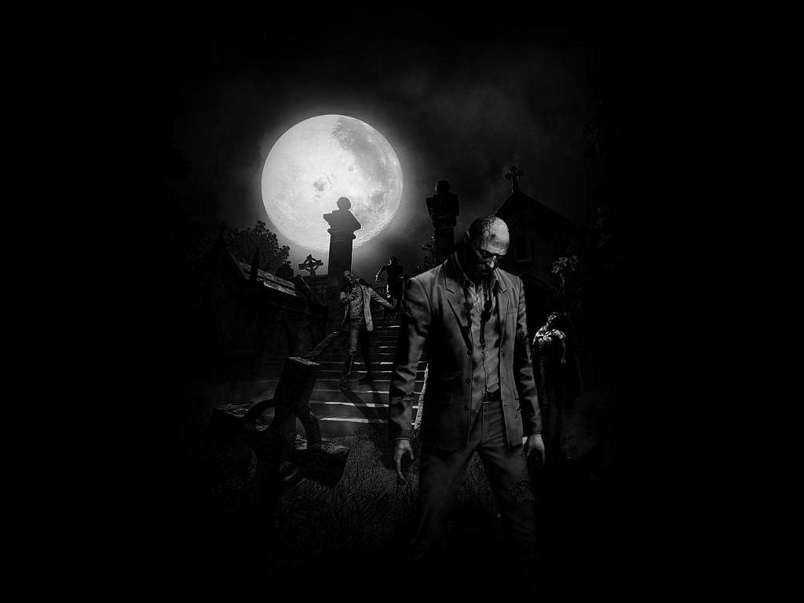
Masacre en Texas
Libranos del Mal
REC
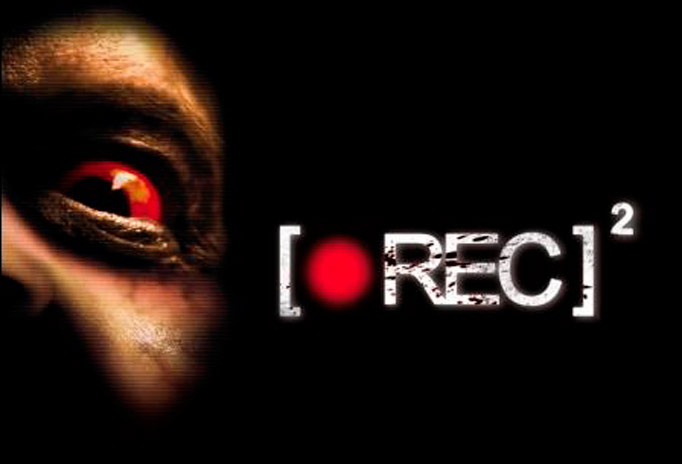
El Conjuro
Mama
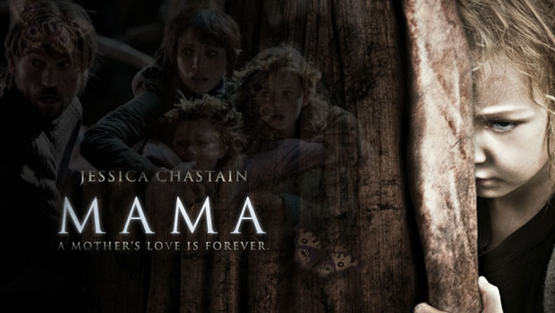
Acividad Paranormal

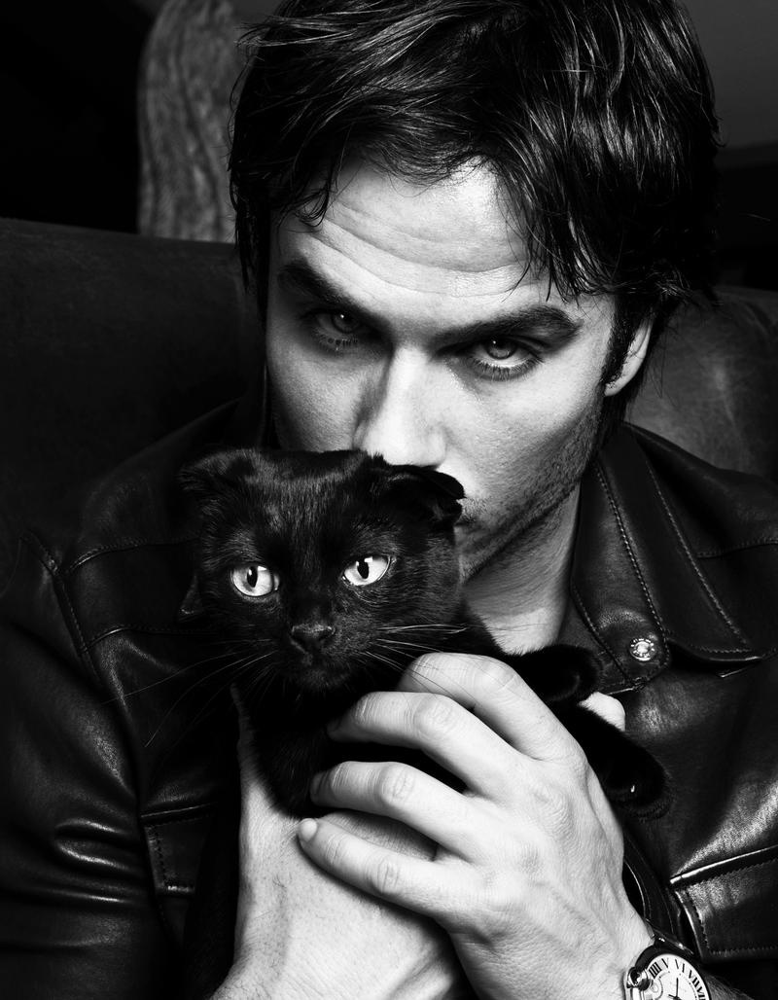
.jpg)
.jpg)
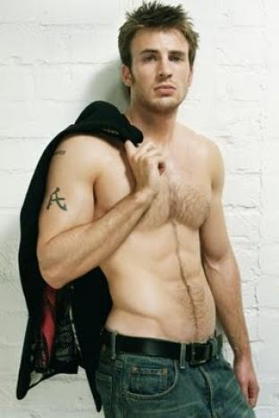
Avengers: Age of Ultron
.jpg)
Insurgnte
Fast & Furious 7
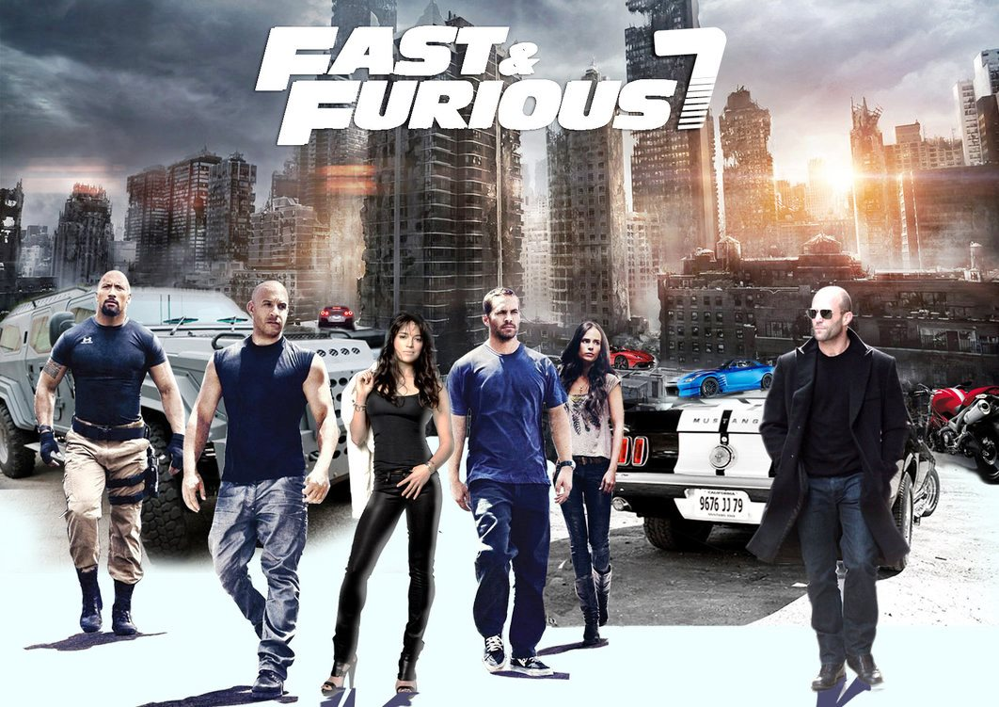
Cincuenta Sombras de Grey